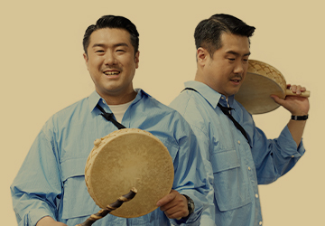
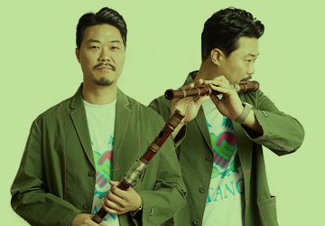
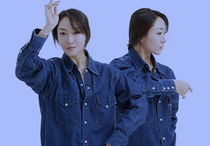
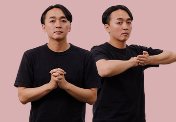
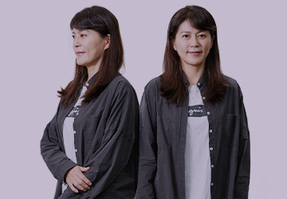
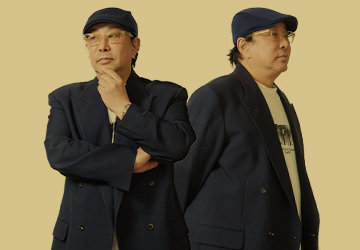
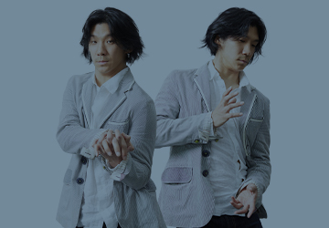
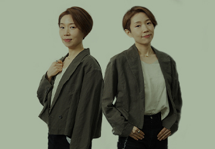

전통문화를 기반으로 다양한 작업을 선보이는 예술가들.
그들이 써내려간 인생 이야기에서 새로운 예술 세계를 느껴보세요.

-
2023.07
vol.60
 21세기 연희판을 열다 연출가 임영호
누구보다 앞뒤 안 보고 달려들지만 연희의 움직임은 매의 눈으로 보는 춤추는 연출가이자 타고난 리더. 그의 연희판 이야기를...
-
2023.06
vol.59
 바람으로부터, 바람을 담아 대금연주가 이영섭
‘바이날로그’와 ‘4인놀이’로 활동하며 대금을 벗 삼아 전통음악과 창작음악의 경계를 오가는 자유로운 영혼의 대명사. 바람으로 소리를 ...
-
2023.05
vol.58
 춤으로 꿈을 그리다 안무가 정보경
평소엔 빈틈 많고 덤벙거리다가도 무대에서는 춤알못도 반하게 만드는 반전 매력의 소유자(a.k.a. 비트 킬링) 그의 무용 인생 이야기를...
-
2023.04
vol.57
어둠 속 음악의 날갯짓 밤 새(Baum Sae)
그들은 밤이 새도록 나는 철새처럼 음악을 향한 날갯짓을 멈추지 않는다.
-
2023.03
vol.56
굿+록? Good Luck! 드러머·보컬 김반장
먼 옛날 복을 빌며 다 같이 즐겼던 장단은 그루브를 만드는 그를 통해 되살아난다.
-
2023.02
vol.55
피리로 다시 만난 세계 삐리뿌(BBIRIBBOO)
낯선 세계에 중력을 만든 피리 소리는 마음의 구멍을 채우며 사람들 사이로 흐른다.
-
2023.01
vol.54
점 긋고, 점 잇다 달음(Dal:um)
점과 점이 이어져 하나의 선이 되듯 가야금과 거문고, 두 사람이 만나 공명한다.
-
2022.12
vol.53
나릿나릿, 다정히 노래하는 정가 보컬리스트 구민지
시의 운율 속에 다정한 울림을 가진 정가를 머리부터 발끝까지 품은 가객이 있다.
-
2022.11
vol.52
숨결로 쉼의 결을 빚다 - 뮤르(MuRR)
피리와 태평소에 불어넣은 그들의 숨결은 마치 마법을 부리듯 우리를 깊은 쉼으로 이끈다.
-
2022.10
vol.51
현세의 살을 푸는 해타, 해파리소년 김대인
현란한 핑거링과 묵직한 목소리로 그는 살을 풀어내기 위한 주술을 멈추지 않는다.
-
2022.09
vol.50
충돌하는 에너지의 울림, 타악 연주가 김소라
젖은 장작에서도 불을 피워낼 열망으로 장구를 두드리는 그에게서 내일의 징조가 보인다.
-
2022.08
vol.49
 춤추는 도깨비당 안무가 지경민
그는 만능 방망이를 가진 어떤 도깨비처럼 춤 하나로 소리와 이야기를 만들어낸다.
-
2022.07
vol.48
 마음으로 하나 된 현의 노래, 가야금 연주가 박순아
시간을 자유롭게 유영하는 가락과 침전한 마음을 깊게 울리는 소리로.
-
2022.06
vol.47
 구상과 추상 사이를 짓는 연출가 정구호
구상과 추상 사이에서 멋을 찾는 그의 손길은 옷부터 무대, 소리, 움직임까지 돋보이게 만든다.
-
2022.05
vol.46
 춤추는 노래, 노래하는 춤 무용가&음악가 김재덕
몸으로 소리를 내고 음악으로 춤을 춘다. 그에게 무용과 음악은 마주 보는 거울과도 같다.
-
2022.04
vol.45
 이야기를 촘촘히 엮은 소리 - '모던판소리공작소 촘촘' 권아신
시대의 틈을 느끼는 자들은 옛것을 좋아한다. 그는 자기 몸과 음색에 맞는 소리와 삶의 이야기로 촘촘히 엮어 시대의 틈을 메운다.
-
2022.03
vol.44
일상의 담백한 음악 - 오! 좋아, 오주하
판소리와 재즈 피아노라는 재료를 다듬어 깊이 우려낸 뒤 소복이 담아낸다. 천천히 맛을 음미하다 보면 '오! 좋아' 감탄사가 절로 난다.
-
2022.02
vol.43
풍류라 쓰고 사랑이라 읽는다 - 서도밴드
귀를 간지럽히는 사랑스러운 소리에 매혹됐다가 순수한 에너지를 뿜어내는 가사에 동화될 때면 파도처럼 마음이 일렁인다.